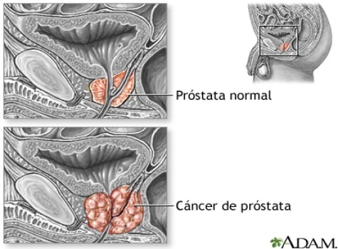

Cáncer de Próstata
El cáncer de próstata es una enfermedad por la que se forman células malignas (cancerosas) en los
tejidos de la próstata. La próstata es una glándula del aparato reproductor masculino. Está
justo debajo de la vejiga (órgano que recibe y expulsa la orina) y delante del recto (parte
inferior del intestino).
¿Qué síntomas tiene el cáncer de próstata
Síntomas
1. Problemas para orinar.
2. Urgencia frecuente de orinar, especialmente en la noche.
3. Chorro débil de orina o con interrupciones.
4. Dolor o ardor al orinar.
5. Sangre en la orina o en el semen.
6. Eyaculación dolorosa.
7. Dolor molesto en la espalda, en las caderas o en la pelvis.
